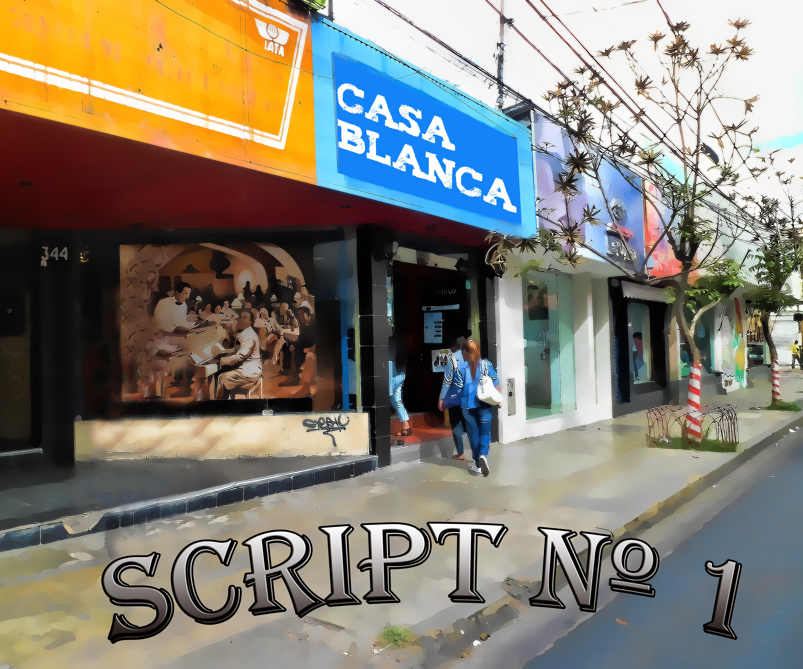

Juan Omar Huanca Balboa
Backend Web Site Develper - Center MEMI - UMSS (current)
Web Develper - Career LAEL (2014)
Web Developer - IdeaSoft S.R.L (2012)
email: omar.huanca.balboa@gmail.com
Background
different resources made for student linguistic its analog state
little Agreement between Career: Interpretes, Computer Science, Communication and more.
little proposal specific problem source public institution these should resolve reply from University to people
Problem
little diffusion multimedia resource make of Student Linguistic (LAEL) difficult self-regulated learning languages
General Objetive
support service news feed Podcast of self-regulated learning languages through to implement Web Plattform Educational.Justify
be implement a manage resources, subscribe to channel aprendizaje program because notification email about new content on plattform.
idea about implement resource multimedia is context environment Rural Area Cochabamba for get feedback time to final user.
technology platform is open source like PHP instead of don't exist financing, because is software educational
Podcast
A podcast is a digital resource like: audio, video, digital radio, PDF, or ePub files subscribe to and downloaded.
Learning Program
Basic France
Basic English
Fonetic Quechua
Psicosocial Quechua
Basic France

Basic English
Psicosocial Quechua
Conclutions
Use tools should be Open Source for project Later.
Use Standar Work.